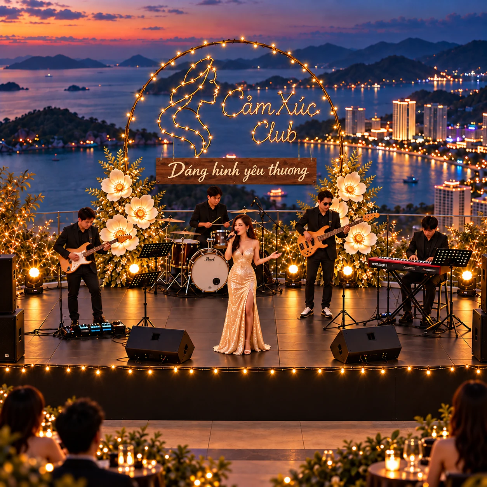
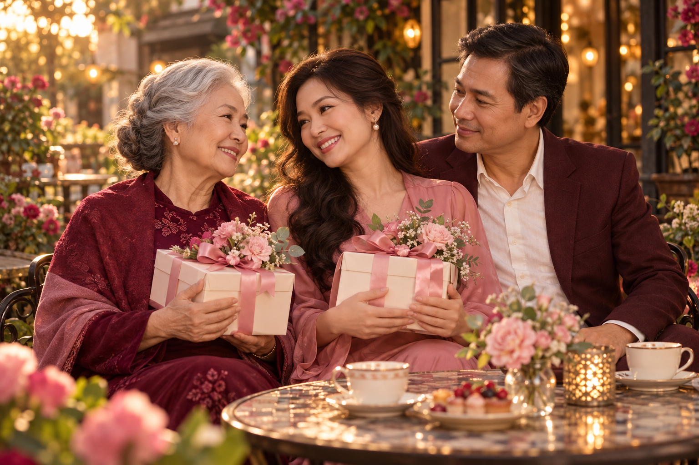
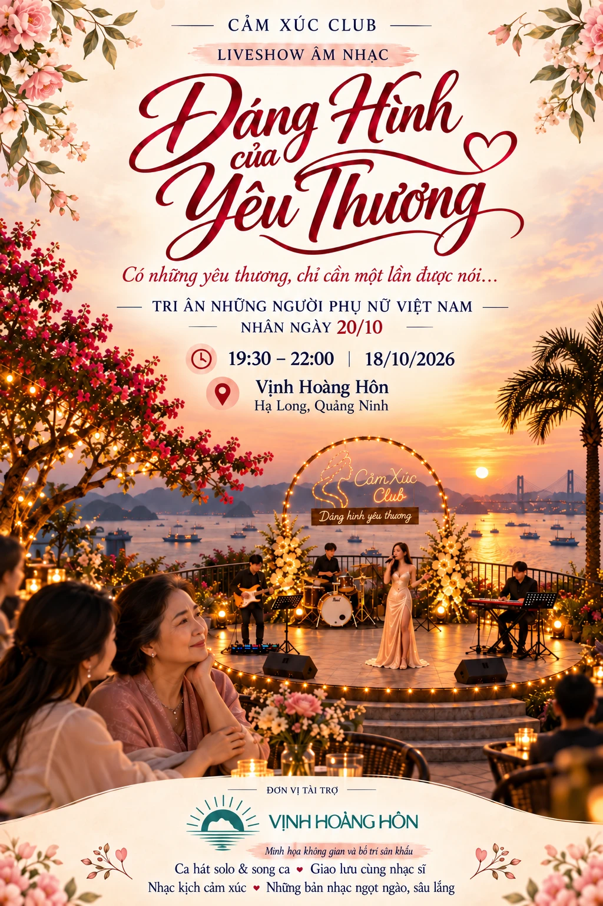

01 / ÂM NHẠC CHẠM CẢM XÚC
Những giai điệu
để cùng lắng nghe.
Những bản nhạc ngọt ngào, sâu lắng; ca hát solo và song ca, giao lưu cùng nhạc sĩ và nhạc kịch cảm xúc. Một không gian để thả lòng và tìm thấy sự đồng cảm.
Mời anh chị cùng Mẹ, cùng Vợ, cùng người mình thương đến với Dáng Hình Của Yêu Thương. Một buổi tối để nghe nhạc, trao lời tri ân và dành thời gian thật gần nhau.
Nhận lời mời cùng người thương ↓Ở Hạ Long, anh chị có nhiều lựa chọn cho một buổi tối: một cuộc dạo chơi, một điểm hẹn quen, một không gian giải trí giữa thành phố du lịch đầy sức sống.
Lần này, Cảm Xúc Club xin được đề xuất một cuộc hẹn dành cho cảm xúc và lòng biết ơn. Một buổi tối để ngồi cạnh người phụ nữ của mình, cùng nghe những giai điệu ngọt ngào và dành cho nhau sự quan tâm trọn vẹn.
Có thể Mẹ đã lâu chưa đi nghe nhạc. Có thể Vợ vẫn chờ một cuộc hẹn mà cả hai không phải vội. Có thể có một người phụ nữ anh chị muốn cảm ơn, nhưng chưa tìm được dịp để nói thành lời.
Dáng Hình Của Yêu Thương là lời mời dành cho những điều giản dị ấy. Xin mời anh chị đến cùng người mình thương, để một buổi tối ở Hạ Long trở thành một kỷ niệm ấm áp của gia đình.
Mời anh chị hình dung một buổi tối trong không gian mở của Vịnh Hoàng Hôn: ánh đèn ấm, những giai điệu ngọt ngào và người thương ngồi bên cạnh.
Một khung cảnh để cùng nghe nhạc, cùng trò chuyện và dành cho nhau sự chú ý giữa Hạ Long rực rỡ.
Xem ảnh sân khấu đầy đủ ↗

Một bài hát gợi nhớ những năm tháng đã qua. Một ánh nhìn dành cho người ngồi cạnh. Một món quà trao đi cùng lời cảm ơn chân thành.
“Mẹ ơi, cảm ơn Mẹ.”
“Cảm ơn em vì đã luôn ở bên.”
Chúng tôi mong những khoảnh khắc ấy khiến khán giả thấy gần nhau hơn. Mong Mẹ, Vợ và những người phụ nữ yêu quý có thể đón nhận sự quan tâm, thay vì luôn là người dành sự quan tâm cho người khác.
Hình ảnh minh họa tinh thần tri ân; không phải ảnh ghi nhận sự kiện.
Một lời thương chân thành.
Một buổi tối mình dành trọn cho nhau.
Chúng tôi chuẩn bị cuộc hẹn này với mong muốn: người phụ nữ đi cùng anh chị có một buổi tối cảm thấy mình được nhớ đến, được nâng niu và được yêu thương.
Những bản nhạc ngọt ngào, sâu lắng; ca hát solo và song ca, giao lưu cùng nhạc sĩ và nhạc kịch cảm xúc. Một không gian để thả lòng và tìm thấy sự đồng cảm.
Tinh thần tri ân xuyên suốt chương trình, để lời cảm ơn dành cho những người phụ nữ có cơ hội được cất lên chân thành. Mong một món quà, một lời thương trở thành điều đáng nhớ.
Chúng tôi mong gia đình mang về một câu chuyện để nhắc lại, một bài hát để nhớ và một cảm giác ấm áp còn theo mình sau khi chương trình khép lại.
Chúng tôi trân trọng anh chị vì sự quan tâm dành cho chương trình và những giá trị mà đêm nhạc hướng tới: lòng biết ơn, sự gắn kết gia đình và niềm vui được trao gửi yêu thương.
Sự hiện diện của anh chị là một sự khích lệ đối với Cảm Xúc Club. Chúng tôi mong được cùng anh chị lắng nghe âm nhạc, chia sẻ cảm xúc và dành sự trân trọng cho những người phụ nữ trong cuộc đời mình.
Xin được dành lời chào đón chân thành
tới anh chị và người thân.
Nếu anh chị có thể sắp xếp tham dự, đó sẽ là một niềm vui với Cảm Xúc Club. Mong cuộc hẹn này cũng là dịp để anh chị cùng người thân tận hưởng âm nhạc và có thêm một kỷ niệm đẹp.
Anh chị có thể báo lại cho người đã mời mình, hoặc đăng ký qua fanpage của ban tổ chức. Xin cho biết tên và tổng số người tham dự để việc trao đổi, đón tiếp được thuận tiện.
Rất mong được đón tiếp anh chị.

Tri ân những người phụ nữ Việt Nam
nhân ngày 20/10
Đường dẫn fanpage sẽ được bổ sung. Anh chị có thể báo lại người mời ngay bên trên.
Phản hồi được sao chép để anh chị gửi cho người mời. Trang này không tự gửi hoặc ghi nhận xác nhận tham dự.
Mong được gặp anh chị
trong một buổi tối thật nhiều yêu thương.
Và mong sau cuộc hẹn ấy, những lời cảm ơn được nói ra sẽ còn ở lại — trong một cái ôm, một cuộc trò chuyện, một cách quan tâm nhau dịu dàng hơn.